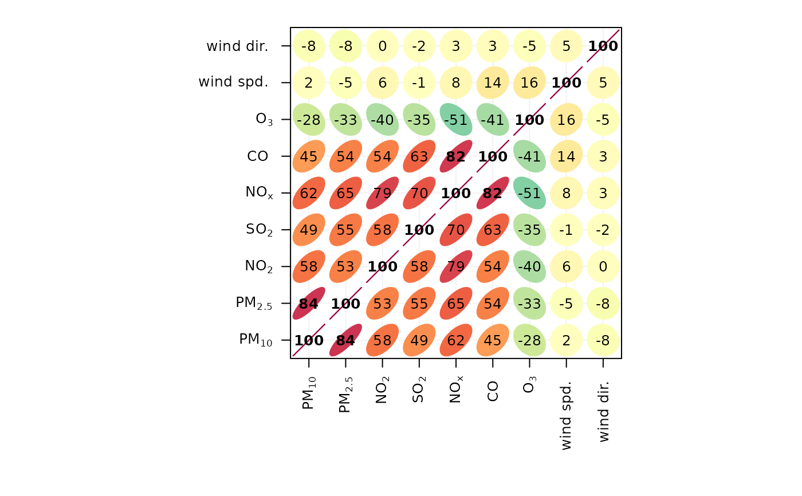
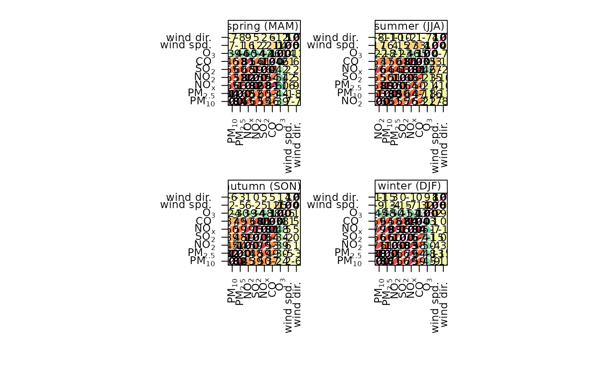

Function to to draw and visualise correlation matrices using lattice. The primary purpose is as a tool for exploratory data analysis. Hierarchical clustering is used to group similar variables.
Usage
corPlot(
mydata,
pollutants = NULL,
type = "default",
cluster = TRUE,
method = "pearson",
use = "pairwise.complete.obs",
dendrogram = FALSE,
lower = FALSE,
cols = "default",
r.thresh = 0.8,
text.col = c("black", "black"),
auto.text = TRUE,
plot = TRUE,
...
)Arguments
- mydata
A data frame which should consist of some numeric columns.
- pollutants
the names of data-series in
mydatato be plotted bycorPlot. The default optionNULLand the alternative “all” use all available valid (numeric) data.- type
typedetermines how the data are split i.e. conditioned, and then plotted. The default is will produce a single plot using the entire data. Type can be one of the built-in types as detailed incutDatae.g. “season”, “year”, “weekday” and so on. For example,type = "season"will produce four plots — one for each season.It is also possible to choose
typeas another variable in the data frame. If that variable is numeric, then the data will be split into four quantiles (if possible) and labelled accordingly. If type is an existing character or factor variable, then those categories/levels will be used directly. This offers great flexibility for understanding the variation of different variables and how they depend on one another.- cluster
Should the data be ordered according to cluster analysis. If
TRUEhierarchical clustering is applied to the correlation matrices usinghclustto group similar variables together. With many variables clustering can greatly assist interpretation.- method
The correlation method to use. Can be “pearson”, “spearman” or “kendall”.
- use
How to handle missing values in the
corfunction. The default is "pairwise.complete.obs". Care should be taken with the choice of how to handle missing data when considering pair-wise correlations.- dendrogram
Should a dendrogram be plotted? When
TRUEa dendrogram is shown on the right of the plot. Note that this will only work fortype = "default".- lower
Should only the lower triangle be plotted?
- cols
Colours to be used for plotting. Options include “default”, “increment”, “heat”, “spectral”, “hue”, “greyscale” and user defined (see
openColoursfor more details).- r.thresh
Values of greater than
r.threshwill be shown in bold type. This helps to highlight high correlations.- text.col
The colour of the text used to show the correlation values. The first value controls the colour of negative correlations and the second positive.
- auto.text
Either
TRUE(default) orFALSE. IfTRUEtitles and axis labels will automatically try and format pollutant names and units properly e.g. by subscripting the `2' in NO2.- plot
Should a plot be produced?
FALSEcan be useful when analysing data to extract corPlot components and plotting them in other ways.- ...
Other graphical parameters passed onto
lattice:levelplot, with common axis and title labelling options (such asxlab,ylab,main) being passed viaquickTextto handle routine formatting.
Value
an openair object
Details
The corPlot function plots correlation matrices. The implementation
relies heavily on that shown in Sarkar (2007), with a few extensions.
Correlation matrices are a very effective way of understating relationships
between many variables. The corPlot shows the correlation coded in
three ways: by shape (ellipses), colour and the numeric value. The ellipses
can be thought of as visual representations of scatter plot. With a perfect
positive correlation a line at 45 degrees positive slope is drawn. For zero
correlation the shape becomes a circle. See examples below.
With many different variables it can be difficult to see relationships
between variables, i.e., which variables tend to behave most like one
another. For this reason hierarchical clustering is applied to the
correlation matrices to group variables that are most similar to one another
(if cluster = TRUE).
If clustering is chosen it is also possible to add a dendrogram using the
option dendrogram = TRUE. Note that dendrogramscan only be plotted for
type = "default" i.e. when there is only a single panel. The
dendrogram can also be recovered from the plot object itself and plotted more
clearly; see examples below.
It is also possible to use the openair type option to condition the
data in many flexible ways, although this may become difficult to visualise
with too many panels.
References
Sarkar, D. (2007). Lattice Multivariate Data Visualization with R. New York: Springer.
Friendly, M. (2002). Corrgrams : Exploratory displays for correlation matrices. American Statistician, 2002(4), 1-16. doi:10.1198/000313002533
Examples
## basic corrgram plot
corPlot(mydata)

## plot by season ... and so on
corPlot(mydata, type = "season")

## recover dendrogram when cluster = TRUE and plot it
res <-corPlot(mydata)
plot(res$clust)
if (FALSE) { # \dontrun{
## a more interesting are hydrocarbon measurements
hc <- importAURN(site = "my1", year = 2005, hc = TRUE)
## now it is possible to see the hydrocarbons that behave most
## similarly to one another
corPlot(hc)
} # }